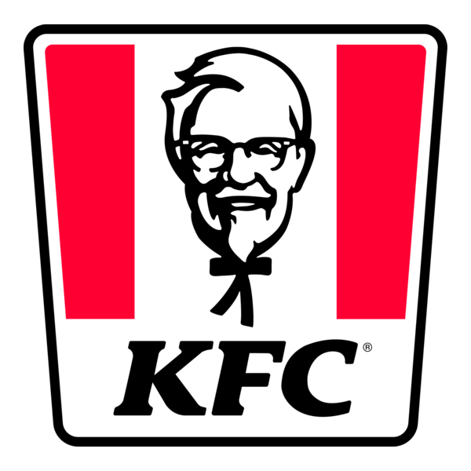
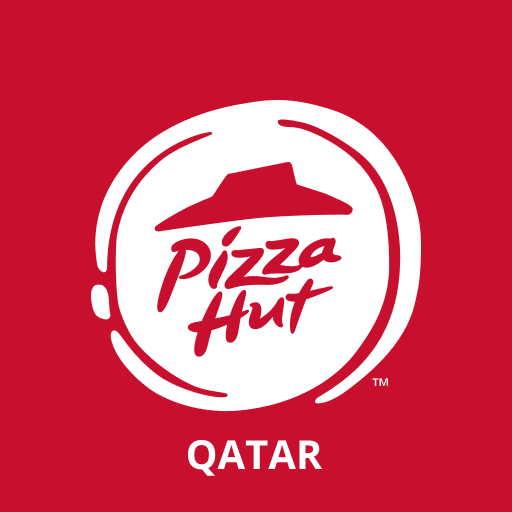

Professional Summary
Versatile and certified System & Cloud Engineer with 10+ years of experience delivering highly available, secure, and scalable cloud and on-prem solutions. Adept at designing robust AWS infrastructures, automating deployments, and optimizing systems for maximum performance and cost-efficiency. Proven expertise in web hosting platforms, DevOps pipelines, Linux administration, virtualization, and secure enterprise network architecture.
Education & Professional Qualifications
- Bachelor of Science in Computer Science – Islamia University, Bahawalpur (2013)
- Certifications: AWS (CLF-C01), Ansible (EX294), Certified Kubernetes Administrator (CKA), RHCSA, RHCE, MCITP, CCNA
- Trainings: AWS, VMware, Docker, Kubernetes, Git, CI/CD, DevOps, Infrastructure Automation
- Affiliations: CisCom (ciscom.pk)
Executive Career History
- System, Network & Cloud Lead – Simplex Technology Solutions (Oct 2020 – Present)
- Senior Linux & Cloud Engineer – Zaryansgroup (Feb 2018 – Oct 2020)
- System & Network Engineer – Digital Media Distribution Max (Jul 2016 – Jan 2018)
- System Administrator II – U-Microfinance Bank (Nov 2015 – Jul 2016)
- System & Network Administrator – eConceptions (Jan 2013 – Nov 2015)
Technical Skills
- Cloud Platforms: AWS, LightSail, EC2, S3, RDS, VPC, CloudFront, IAM, Route 53, CloudFormation, WAF
- DevOps & CI/CD: Jenkins, Git, GitHub Actions, Bitbucket Pipelines, CodeDeploy, Docker, Kubernetes, Helm
- Infrastructure Automation: Ansible, Terraform, Bash, Cron jobs
- Monitoring & Logging: CloudWatch, CloudTrail, AWS Config, ELK Stack, Prometheus, Grafana
- Security & Networking: IAM, MFA, encryption (KMS), VPNs, firewalls, NACLs, SSL/TLS, intrusion prevention
- Virtualization: VMware vSphere, ESXi, vCenter, Proxmox
- Linux Administration: RHEL, CentOS, Ubuntu, LAMP/LEMP stacks, user roles, SELinux, systemd, fail2ban
Linux Server Administration
- Managed production-grade Linux environments with a focus on uptime, performance, and security
- Implemented automated provisioning and patching using Ansible and custom scripts
- Performed system hardening, vulnerability assessments, log audits, and real-time monitoring
- Configured Apache/Nginx, MySQL/MariaDB, and PHP/Python apps with SSL and caching
- Handled virtualization, backups, RAID storage, disaster recovery, and BCP planning
Key Clients

